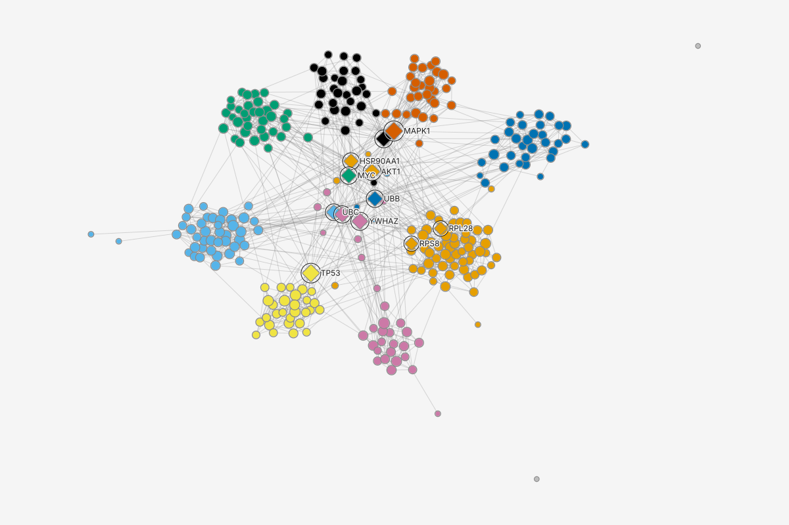
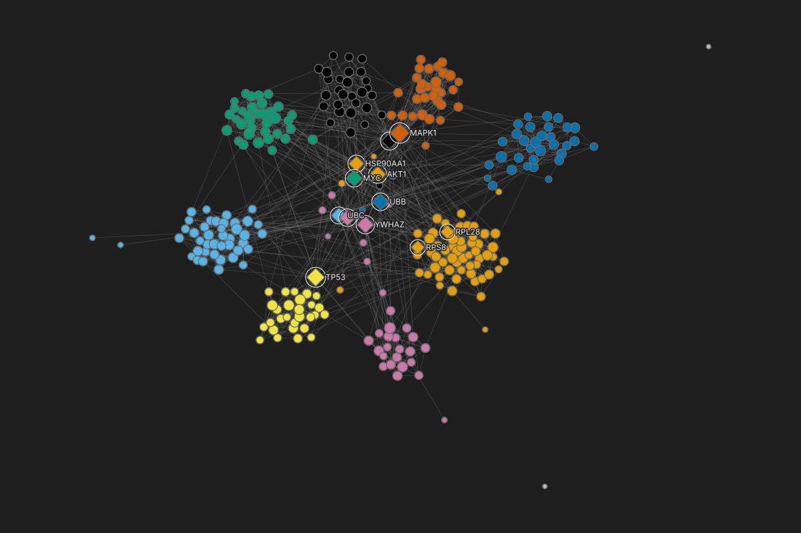

Louvain community
Community 162
Community 243
Community 336
Community 436
Community 531
Community 631
Community 730
Community 829
Other: 2 groups of 12
PageRank: size
0.000503
0.0118
Hubs degree 17 or more
diamond12
Dragging Hubs above PageRank: size. Hubs sets shape and size. Below PageRank: size it keeps shape but loses size on all 12. Dropped on the line, it wins size too. It never wins color, because it sets none: each hub keeps its Louvain community's color. The Louvain row is folded; a folded run moves as one block.
Table300 nodes, 1,262 edges (rows)View > Table